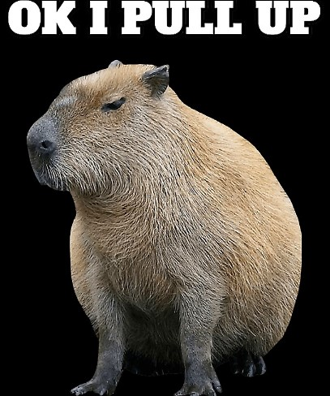

In the early 2020s, capybaras became a growing figure of meme culture due to many factors, including the disturbances in Nordelta which led to them being comically postulated as figures of class struggle. Also, a common meme format includes capybaras in various situations with the song "After Party" by Don Toliver, leading to a tremendous growth in popularity. Due to a lyric in Toliver's song, capybaras are also associated with the phrase "Ok I pull up".
Capybaras are incredibly social animals? These gentle giants are known for their friendly nature and often form close-knit groups, sometimes even sharing their favorite swimming spots with other animals like birds! Capybaras truly exemplify the spirit of harmony in the animal kingdom Capybaras are excellent swimmers and can stay submerged for up to five minutes. Their webbed feet and dense fur help them navigate through water with ease. In fact, they are so well-adapted to aquatic life that they're often called 'water pigs'